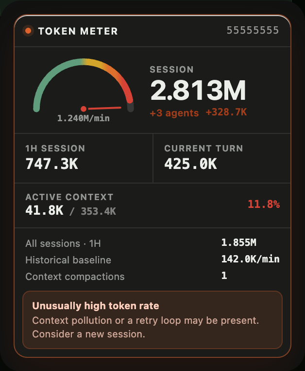

A needle, not a percentage
The meter rides along beside your agent, reading tokens per minute against your own baseline. Session total, 24-hour total, streak, lifetime — without opening anything.

Live gauge, runaway-context alarm, and your usage patterns. Without your data leaving the machine.
✓ Notarized by Apple · macOS · Tracks Claude Code, Codex, and Cline
curl -fsSL https://tokenwidget.app/install.sh | bash
Install Token Widget on this Mac: clone https://github.com/SergioChan/token-meter.git and follow INSTALL_WITH_AGENT.md
git clone https://github.com/SergioChan/token-meter.git && cd token-meter && npm run claude:install

The meter rides along beside your agent, reading tokens per minute against your own baseline. Session total, 24-hour total, streak, lifetime — without opening anything.
The alarm has no fixed number to trip. It learns the median rate of your own turns and speaks up when one runs several times past it — the signature of context pollution or a retry loop. Until it has seen enough of your work to be sure, it stays quiet.

Claim a handle that is yours across the community. Behind it sits your full record: the token activity calendar, streaks, cache hit rate, and the split across Claude Code, Codex, and Cline.
Every number is computed on your own machine and stays there. Sharing is a deliberate switch, and even then only signed totals travel — never a word of what you wrote.
Read locally, stored locally.
Signed totals, nothing else.